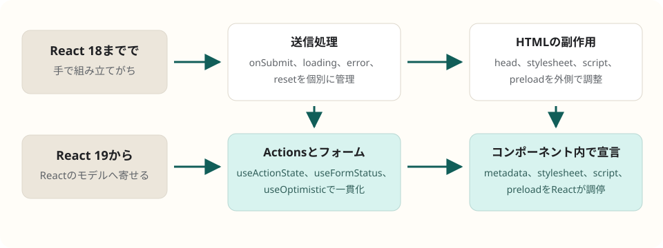

React / バージョン移行
React 19で何が変わったか
React 19は、単なる便利Hookの追加ではなく、フォーム送信、非同期更新、楽観的UI、リソース読み込み、Server ComponentsをReactのレンダリングモデルに寄せるリリースです。実務では「イベントハンドラで全部手作業」から「Action、Transition、Suspense、フォーム、head管理をReactに任せる」方向へ設計を変えるのが要点です。
簡潔なQ&A
- Q. React 19で一番大きく変わったことは？
- A. 非同期の「操作」をActionとして扱い、pending、エラー、楽観的更新、フォーム送信をReactの仕組みに乗せやすくなったことです。
useActionState、useFormStatus、useOptimisticが中心です。 - Q. 実務で書き方を変えるべきところは？
- A. フォームは
onSubmitで手作業する前に<form action>とActionを検討します。送信中状態は個別のisLoading乱立よりuseActionStateやuseFormStatusへ寄せ、即時反映はuseOptimisticで表現します。 - Q. 既存アプリはすぐ全面的に書き換えるべき？
- A. いいえ。まずReact 18.3で警告を確認し、削除APIや型変更を直し、フォームやミューテーションの多い画面から段階的にReact 19の書き方へ寄せるのが現実的です。

まず押さえる全体像
React 19は2024年12月5日に安定版として公開されました。2026年5月時点の公式ドキュメントはReact 19.2を表示していますが、19系の設計上の大きな転換は安定版React 19で入ったものです。
実務上の読み方は、「ReactがUIだけでなく、UIに付随する非同期操作とドキュメント資源も理解するようになった」です。従来は、フォーム送信、送信中フラグ、エラー表示、楽観的更新、メタタグ、stylesheet、script、preloadをそれぞれ別の層で調整しがちでした。React 19では、それらをコンポーネントから宣言し、Reactがレンダリング、Suspense、SSR、Hydrationと合わせて扱える範囲が増えています。
新機能の要点
| 領域 | 主な変更 | 実務での意味 |
|---|---|---|
| Actions | startTransition内の非同期関数をActionとして扱う慣習が入り、フォームActionも追加された。 |
送信処理をイベントハンドラの副作用ではなく、UI状態を返す操作として設計する。 |
| フォーム | <form action={fn}>、useActionState、useFormStatusが使える。 |
送信中、結果、バリデーションエラー、フォームリセットをReactに寄せる。 |
| 楽観的UI | useOptimisticで、通信完了前の見かけ上の状態を表せる。 |
「成功したように見せて、失敗時に戻す」体験を標準の考え方で書く。 |
| リソース読み取り | useでPromiseやContextをrender中に読む。PromiseではSuspenseと連動する。 |
データ取得はSuspense対応ライブラリやフレームワークと合わせ、レンダリング境界を設計する。 |
| ref | 関数コンポーネントでrefを通常のpropとして受け取れる。 |
新規コンポーネントではforwardRef前提を減らせる。 |
| Context | <SomeContext value={...}>をProviderとして使える。 |
新しいコードは.Providerより簡潔な形へ寄せられる。 |
| Document Metadata | <title>、<meta>、一部の<link>をコンポーネント内で宣言できる。 |
ルートやページ単位のメタ情報をコンポーネント近くに置ける。 |
| stylesheet / script / preload | stylesheetの優先度、async scriptの重複排除、preloadなどのAPIが強化された。 |
CSSや外部スクリプトを、必要なコンポーネントの近くで宣言しやすくなる。 |
| Server Components | React Server ComponentsとServer Actionsが19系の安定機能として扱われる。 | 対応フレームワーク上では、クライアントへ送るJSを減らす設計をより本格的に検討できる。 |
新しいセオリー1: フォームはAction中心に考える
React 18以前の実務では、フォーム送信はonSubmit、preventDefault、isSubmitting、error、resetを手でつなぐことが多くありました。React 19では、まずActionとして書けないかを考えます。
import { useActionState } from "react";
type FormState = {
message: string;
fieldErrors: Record<string, string>;
};
async function saveProfile(
_previousState: FormState,
formData: FormData,
): Promise<FormState> {
const displayName = String(formData.get("displayName") ?? "").trim();
if (!displayName) {
return {
message: "",
fieldErrors: { displayName: "表示名を入力してください。" },
};
}
await updateProfile({ displayName });
return { message: "保存しました。", fieldErrors: {} };
}
export function ProfileForm() {
const [state, formAction, isPending] = useActionState(saveProfile, {
message: "",
fieldErrors: {},
});
return (
<form action={formAction}>
<input name="displayName" />
<button disabled={isPending}>保存</button>
{state.fieldErrors.displayName && <p>{state.fieldErrors.displayName}</p>}
{state.message && <p>{state.message}</p>}
</form>
);
}
ここでの設計ポイントは、想定内の失敗を例外ではなく状態として返すことです。入力エラー、権限不足、在庫不足のように画面に表示したい失敗はActionの戻り値にします。一方で、想定外の例外はError Boundaryに流すほうが、監視や復旧の責務を分けやすくなります。
新しいセオリー2: pendingは近い場所で読む
デザインシステムや共通Buttonでは、親からisPendingをバケツリレーするより、フォーム内でuseFormStatusを読む設計が合う場面があります。React 19では、フォーム自体が状態の文脈を持つと考えると整理しやすいです。
import { useFormStatus } from "react-dom";
function SubmitButton() {
const { pending } = useFormStatus();
return (
<button type="submit" disabled={pending}>
{pending ? "送信中..." : "送信"}
</button>
);
}
この形にすると、フォームの中に置かれた送信ボタンが、親コンポーネントの実装詳細を知らずにpendingを扱えます。共通UI部品では特に効きます。
新しいセオリー3: 楽観的更新は専用の状態として扱う
クリック直後にUIを先に変える処理は、これまでもuseStateで書けました。ただし、通信失敗時の戻し方や連打時の整合性が散らかりやすい領域でした。React 19のuseOptimisticは、「確定状態」と「処理中だけ見せる状態」を分けるためのAPIです。
実務では、いいね、カート数量、並び替え、コメント投稿など、ユーザーが即時反応を期待する操作で検討します。ただし、決済、権限変更、不可逆な削除のように失敗時の心理的コストが高い操作では、楽観的に見せすぎない判断も必要です。
新しいセオリー4: render中に読む資源はSuspense境界と一緒に設計する
useは、PromiseやContextをrender中に読むAPIです。Promiseを読む場合、解決するまでSuspenseします。これにより、データ読み込みと表示待ちの境界をコンポーネントツリーで表しやすくなります。
ただし、Client Componentのrender中で毎回新しいPromiseを作る設計は避けます。公式ドキュメントも、キャッシュされていないPromiseをrender中に作る使い方には警告すると説明しています。実務では、Suspense対応のデータ取得ライブラリ、フレームワークのloader、Server Componentsなど、キャッシュと境界を持つ仕組みと合わせて使うのが基本です。
新しいセオリー5: headや外部リソースをコンポーネントに近づける
React 19では、<title>や<meta>をコンポーネント内に書けます。また、stylesheetやasync scriptの扱いも強化され、重複排除や読み込み順の調停をReactが支援します。
これにより、「このページに必要なメタ情報」「このコンポーネントに必要なCSS」「このウィジェットに必要な外部script」を、利用箇所の近くに置く設計が取りやすくなります。ただし、ルーティング全体でメタ情報の上書き規則が必要なアプリでは、フレームワークやメタデータ管理ライブラリの抽象が引き続き有効です。
移行時に直すべき古い書き方
| 古い書き方 | React 19での扱い | 移行方針 |
|---|---|---|
ReactDOM.render |
削除 | createRootへ移行する。 |
ReactDOM.hydrate |
削除 | hydrateRootへ移行する。 |
unmountComponentAtNode |
削除 | root.unmount()へ移行する。 |
findDOMNode |
削除 | DOM refへ移行する。古いUIライブラリが使っていないか確認する。 |
関数コンポーネントのpropTypesとdefaultProps |
実質的に使えない | TypeScriptやESデフォルト引数へ寄せる。 |
| string refs、Legacy Context | 削除 | callback ref、createContextへ移行する。 |
react-dom/test-utils由来のact |
削除・非推奨 | actはreactからimportする。 |
react-test-renderer |
非推奨 | React Testing Libraryなど、ユーザー操作に近いテストへ移行する。 |
TypeScriptで気をつけること
React 19では型も整理されています。特にref callbackは、cleanup関数を返せるようになったため、暗黙returnでDOMインスタンスを返す書き方が問題になります。
// 避ける: 代入式の結果を暗黙に返してしまう
<div ref={current => (instance = current)} />
// よい: 何も返さないことを明示する
<div ref={current => { instance = current; }} />
また、useRefは型上、引数が必要になりました。曖昧なuseRef()ではなく、useRef(null)やuseRef(undefined)のように初期値を明示します。ReactElementのpropsも、デフォルトがanyからunknown寄りになっているため、要素の中身を覗くテストやユーティリティは見直し対象です。
実務での移行順序
- まずReact 18.3へ上げ、React 19で問題になる非推奨APIの警告を確認する。
- 公式codemodで
ReactDOM.render、string refs、actimport、useFormStateなどを機械的に直す。 - 依存ライブラリが
findDOMNode、React内部API、古いtest rendererに依存していないか確認する。 - TypeScriptの型パッケージをReact 19系へ更新し、ref callbackと
useRefまわりを直す。 - フォームやミューテーションの多い画面から、
useActionState、useFormStatus、useOptimisticへ段階的に移す。 - SSRやSSGを使うアプリでは、Hydration差分、Document Metadata、stylesheet、preloadの扱いを確認する。
- 対応フレームワークを使っている場合だけ、Server ComponentsやServer Actionsの設計を採用する。React単体でフルスタック機能が自動的に生えるわけではない。
設計の方向性
React 19以降の方向性は、「UIは純粋関数、通信は外側」という単純な分離から少し進みます。もちろん副作用を無秩序にrenderへ入れるわけではありません。むしろ、ユーザー操作をActionとして名前づけ、pending、成功、失敗、楽観表示、復旧をReactが理解できる形に置く、という方向です。
そのため、これからの設計では次の判断が重要になります。
- 入力エラーは例外ではなくActionの戻り値にする。
- 送信中状態は個別のbooleanを増やす前に、Actionやフォームの状態として読めないか考える。
- データ読み込みは、Suspense境界、キャッシュ、Server Components、ルーターのloaderのどこで責務を持つか決める。
- DOMへ逃げる処理は
findDOMNodeではなくrefで明示する。 - ページ単位のメタ情報やリソースは、グローバルな副作用ではなくコンポーネントから宣言できないか検討する。
- Server Componentsはフレームワーク選定とセットで考える。クライアント状態を何でもサーバーへ移せばよい、という話ではない。
よくある誤解
React 19にすると状態管理ライブラリは不要になる？
不要にはなりません。React 19が強くしたのは、主にフォーム送信やミューテーション周辺の非同期UIです。クライアント全体の共有状態、正規化キャッシュ、URL状態、複雑なドメイン状態は、引き続き用途に応じて設計します。
useがあるなら、どこでもfetchしてよい？
よくありません。Client Componentのrender中で新しいPromiseを作ると警告対象です。キャッシュされたPromiseやSuspense対応の仕組みと合わせて使います。
Server ComponentsはReactだけで完結する？
完結しません。React 19ではServer Componentsが安定機能として扱われますが、実際に使うには対応フレームワークやバンドラ統合が必要です。フレームワーク実装側の下位APIは19.x内でもsemver安定ではないと公式に説明されています。
要点
React 19に乗り換えたら、フォーム送信とミューテーションをActionとして設計し、pendingや楽観的更新をReactのAPIに寄せるのが最も大きな行動変化です。同時に、古いReact DOM API、findDOMNode、関数コンポーネントのdefaultProps、古いテスト手法を整理し、Server Componentsやリソース管理はフレームワークとの境界を意識して採用します。